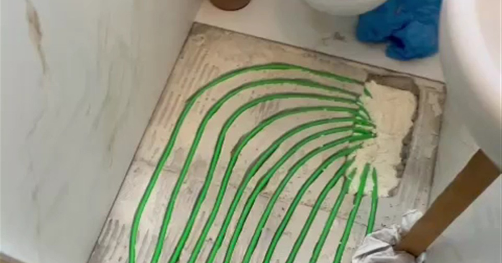

Dlaczego to dobry moment
Nie ma podłóg, nie ma mebli, nie ma nikogo, kto tam mieszka. Ekipa wchodzi do pustego mieszkania, frezuje, układa rury i wychodzi. Powierzchnia do 100 m² to zwykle jeden dzień pracy.
Drugi powód jest praktyczny: i tak będziesz kładł podłogi. Frezowanie wykonuje się przed położeniem okładziny, więc wpasowuje się w harmonogram wykończenia bez dokładania ani jednego dnia przestoju.
Co sprawdzić przed odbiorem
Grubość wylewki. Do frezowania potrzeba co najmniej 4 cm. Deweloperzy robią zwykle 5–6 cm, ale zdarzają się miejsca cieńsze, szczególnie przy progach i na przejściach.
Przebieg instalacji w posadzce. Poproś o rysunek powykonawczy albo chociaż zdjęcia z etapu przed zalaniem. W wylewce potrafi leżeć elektryka do wysp kuchennych i punktów podłogowych, a tego się nie przecina.
Rodzaj wylewki. Cementowa i anhydrytowa zachowują się przy frezowaniu inaczej. Anhydryt jest bardziej kruchy, więc pracujemy na nim ostrożniej. Ta informacja jest w protokole odbioru albo u kierownika budowy.
Stan powierzchni. Spękania i odspojenia trzeba zgłosić deweloperowi w protokole, zanim zaczniesz cokolwiek robić samodzielnie, bo potem trudno dowieść, czyja to wina.
Grzejniki schodzą ze ścian
Po co grzejniki, skoro grzeje cała podłoga. W mieszkaniu deweloperskim podłogówka przejmuje ogrzewanie w całości, a grzejniki znikają razem z zajmowanym przez nie miejscem pod oknami i przy ścianach. Zyskujesz metry, których nie trzeba omijać przy ustawianiu mebli.
Przy mieszkaniu narożnym albo z dużym przeszkleniem nie dokładamy grzejnika, tylko zagęszczamy rozstaw rur w strefie przy oknie. To ta sama instalacja, po prostu gęściej ułożona tam, gdzie ucieka więcej ciepła. Rozstaw dobieramy po policzeniu strat ciepła pomieszczeń, a nie na oko.
Formalności w bloku
Jeżeli mieszkanie jest zasilane z węzła albo sieci miejskiej, zmiana sposobu ogrzewania i ingerencja we wspólną instalację wymagają zgody zarządcy. Zapytaj konkretnie o dwie rzeczy: czy możesz zdemontować grzejniki i czy możesz podpiąć rozdzielacz do istniejących pionów.
Przy własnym źródle ciepła w mieszkaniu, czyli piecu gazowym dwufunkcyjnym, sprawa jest prostsza, bo cała instalacja jest twoja.
Kiedy odpuścić
Kiedy wylewka jest cieńsza niż 4 cm albo naszpikowana instalacjami. Wtedy uczciwa odpowiedź brzmi: albo nowa warstwa na wierzchu, albo zostajemy przy grzejnikach. Mówimy o tym po oględzinach, przed podpisaniem czegokolwiek.
Najczęstsze pytania
Jak sprawdzić grubość wylewki?
Najprościej z dokumentacji od dewelopera albo od kierownika budowy. Jeżeli nie ma zapisu, robi się kontrolne nawiercenie w niewidocznym miejscu, na przykład pod przyszłą zabudową. Do frezowania potrzebujemy minimum 4 cm.
Co jeśli w wylewce biegną instalacje?
To normalna sytuacja, szczególnie przy wyspach kuchennych i punktach podłogowych. Dlatego prosimy o rysunek powykonawczy albo zdjęcia z etapu przed zalaniem posadzki. Przebiegu instalacji nie przecinamy, tylko projektujemy pętle tak, żeby je ominąć.
Czy potrzebna jest zgoda spółdzielni?
Jeżeli mieszkanie jest zasilane z węzła albo sieci miejskiej, to zwykle tak. Zapytaj zarządcę o dwie konkretne rzeczy: czy możesz zdemontować grzejniki i czy możesz podpiąć rozdzielacz do istniejących pionów. Przy własnym piecu gazowym w mieszkaniu instalacja jest w całości twoja i sprawa jest prostsza.
Kiedy najlepiej wejść z frezowaniem?
Przed położeniem podłóg, w pustym mieszkaniu. Nie ma wtedy mebli ani okładzin, a prace wpasowują się w harmonogram wykończenia bez dokładania osobnego etapu. Powierzchnia do 100 m² to zwykle jeden dzień.